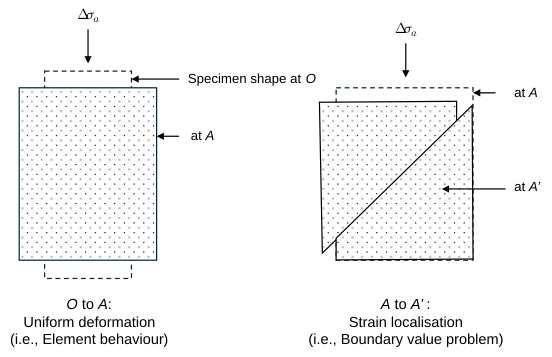
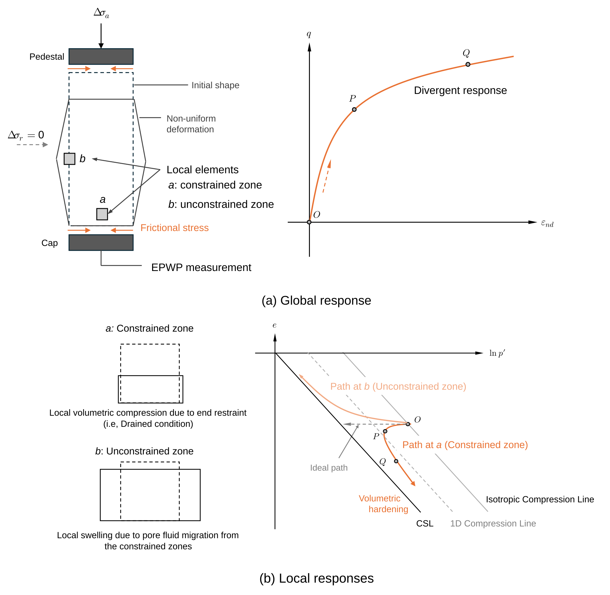
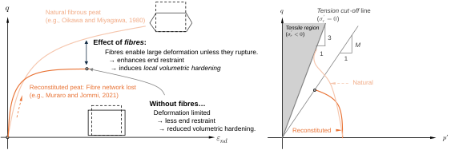
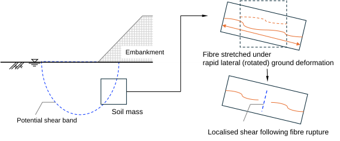

Ch3.2.2
Shear failure
The failure of the ground is typically governed by shear mechanism. The most common loading conditions in practice—such as vertical loading and unloading due to the construction of embankments, torsional stresses induced during pile driving, and the relatively moderate lateral stress release associated with cutting or excavation—primarily induce shear deformation. The critical state theory is a fundamental and consistent framework for explaining the shear failure of soils. It serves as a complementary basis of typical soil behaviour, alongside the compressibility, and is often incorporated into constitutive models (e.g., Cam-Clay).

Fig. 3.2.5 illustrates the element-level undrained triaxial compression (UTC) responses of soils which follows the critical state framework (e.g., non-brittle sand, reconstituted clay). The exemplified soils are normally consolidated with two different isotropic consolidation pressure (lighter orange: lower consolidation stress). Based on the observations, the critical state is characterised as the state: at which the stiffness reduces to zero (point A in Fig. 3.2.5 a), at which plastic deviatoric strain continues to develop (state A-A’ in Fig. 3.2.5 a), at which plastic volumetric strain ceases to occur (i.e., $\dot{\varepsilon}_{nv}^p=-\dot{\varepsilon}_{nv}^e=0$), and thus further evolution of effective stress path is not permitted (state A-A’ in Fig. 3.2.5 b), which is determined solely by the volume–effective stress state (state A-A’ in Fig. 3.2.5 c).
The critical states lie on a single line in the volume-effective stress plane as shown in Fig. 3.2.5 c, which is referred to as the critical state line, typically parallel to the compression line. The effective stress states at the critical state also fall on a single line, which is often expressed in terms of the stress ratio $M$ (Fig. 3.2.5 b):
The critical state stress ratio $M$ is related to the internal friction angle $\phi'$ for cohesionless soil:
The stiffness vanishment upon critical state induces the shear stress localisation in soil mass, thereby leading to failure. Under conventional undrained triaxial compression, the specimen ideally undergoes pure deviatoric and uniform deformation as illustrated in Fig. 3.2.6 (left). Once the specimen reaches point A, however, it experiences a highly unstable deformation due to the vanishing stiffness. Strain localises forming a shear band, as shown in Fig. 3.2.6 (right). Beyond this point, the measured stress-strain relationship no longer represents the element behaviour. Also, numerical techniques such as the finite element method (FEM) are required to capture or detect the development of shear bands.

The applicability of the critical state framework to fibrous peats remains a matter of debate. This is exemplified by UTC tests performed on them (e.g., Oikawa and Miyagawa, 1970; Oikawa, 1980; Yamaguchi et al., 1986; AHendry et al., 2012; Wang and Li, 2022); fibrous peats typically do not exhibit stiffness vanishment even after large deformation under UTC condition. As schematised in Fig. 3.2.6 (a), friction between triaxial cap / pedestal and specimen ends generates constraint zones within specimen. With increasing axial strain, the specimen deformation progressively becomes heterogeneous. It is hence essential to view separately the global (= measured) response and the local response to elucidate this behaviour.
As illustrated in Fig. 3.2.6 (b), the local element “a”, located near the constrained end, undergoes partial dehydration, leading to volumetric hardening. Conversely, the local element “b” in the unconstrained zone experiences swelling as a result of water migration from the constrained zone. Consequently, the global hardening response observed in fibrous peats during UTC is not an intrinsic material property, but partially an artefact arising from the non-uniform deformation. Previous studies (e.g., Asaoka et al., 1994; Sheng et al., 1997) demonstrate this via finite element analyses. Muraro and Jommi (2021) also noted that this artefact can be mitigated by reducing end friction, although such correction is feasible only when the specimen is reconstituted.
The comparison between natural and reconstituted peat under undrained triaxial compression is schematically illustrated in Fig. 3.2.7. As the natural fibre network allows stable deformation, the effect of end restraint becomes more pronounced in natural fibrous peats. The specimen apparently undergoes the volumetric hardening along the tension cut-off line (where the effective radial stress is zero: the stress ratio $q/p'=3$).

As discussed, shear failure of peat is generally not evident in triaxial compression tests. Nonetheless, it does occur in situ (e.g. Zwanenburg and Jardine, 2015). Here, a mechanism of such full-scale failure is considered (Fig. 3.2.8). Under construction loading (e.g., embankment toe), the principal stress directions are inclined from the vertical, resulting in rotational shear deformation within the peat mass. The fibre network resists shearing by stretching. As deformation progresses, fibre rupture occurs once the allowable stretch is exceeded (such intense fibre stretching does not develop under conventional triaxial conditions).
After fibre rupture, the stress is redistributed to the surrounding peat “matrix”, which would be equivalent to the reconstituted sample and is comparatively weak as indicated in Fig. 3.2.7; this results in discrete localised shear zones rather than a single, well-defined slip plane, as observed by Zwanenburg and Jardine (2015). The observed field-scale shear failure does not contradict the laboratory findings but rather reflects the scale-dependent nature of fibre reinforcement.

A practical approach for modelling fibre reinforcement is the following additive formulation of constitutive relationship:
Here, $\theta_f$ is the volume fraction of fibres, $[\mathbf{D}_m]$ is the stiffness matrix for peat matrix (approximated as reconstituted peat), and $[\mathbf{D}_f]$ is the stiffness matrix for fibre phase. Jommi et al. (2021) demonstrated that such a composite formulation simulates the elongated effective stress path, induced by end-restraint effects (as schematically illustrated in Fig. 3.2.7), more accurately than a conventional single-structure formulation.
It will become possible to simulate full-scale failure within peat ground by incorporating the fibre rupture effect into the expression $[\mathbf{D}_f]$, although it is beyond the scope of the present study. Nevertheless, the background justifies the choice of critical state parameter $M$ for developing the shear model $[\mathbf{D}_m]$ based on the response of reconstituted peat, as an alternative to natural peat, whose shear characteristics are difficult to determine through conventional laboratory testing.